|
Turbulence Modeling Resource |
Note that the use of overbars and hats, indicating time averaging and density-weighted averaging
(described on this page) is not always followed throughout the
rest of the website. Often, they are dropped for convenience.
Implementing Turbulence Models into the Compressible RANS Equations
There are many technical papers and texts that derive and/or
describe the compressible Reynolds-averaged Navier-Stokes equations (also termed the Favre-averaged
Navier-Stokes equations). See, for example,
(1) Gatski, T. B. and Bonnet, J.-P., "Compressibility, Turbulence and High Speed Flow,"
2009, Elsevier, Amsterdam, (2) Wilcox, D. C., "Turbulence Modeling for CFD," 2006, DCW Industries, La Canada, CA, or
(3) Hirsch, C., "Numerical Computation of Internal and External Flows, Vol. 2," 1990, John Wiley & Sons,
Chichester.
The equations can be written as follows:
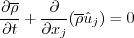 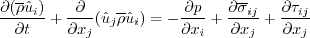 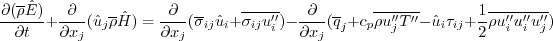 where
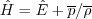 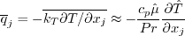 and the viscous stress tensor is:
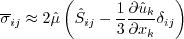 Note that the Reynolds stress term
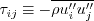 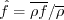 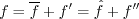 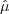 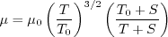 where
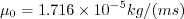 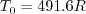 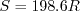 The equation of state is:
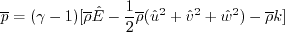 where k is the local turbulent kinetic energy (the kinetic energy of the fluctuating field):
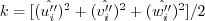 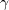 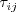 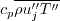 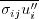 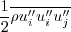 Most turbulence modeling focuses on the Reynolds stress terms
().
These are either solved directly (as in full second-moment Reynolds stress models) or
defined via a constitutive relation for simpler models.
For example, the common Boussinesq approximation is:
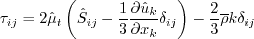 where 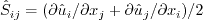 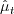 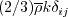 Less attention is typically given to the other terms that need to be modeled.
Most commonly, a Reynolds analogy is used to model the turbulent heat flux:
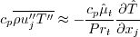 where Prt is a "turbulent Prandtl number," often taken to be constant (e.g.,
around 0.9 for air).
Ideal gas relations are typically used to resolve the heat capacity at constant pressure (cp);
if required, the specific gas constant for air is usually taken as 287.058 J/(kgK).
The terms associated with molecular diffusion and turbulent transport
in the energy equation are modeled different ways (often lumped together). For example, one model is:
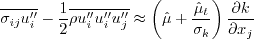 where 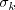 Return to: Turbulence Modeling Resource Home Page
Recent significant updates:
07/10/2021 - mentioned that sigma_k sometimes is written in the numerator
01/10/2017 - added mention of gamma and specific gas constant for air
08/22/2013 - added equation for Sutherland's Law
07/08/2013 - fixed typo in energy equation
Page Curators: Christopher Rumsey,
Ethan Vogel,
Clark Pederson
Clark Pederson
Last Updated: 10/10/2024